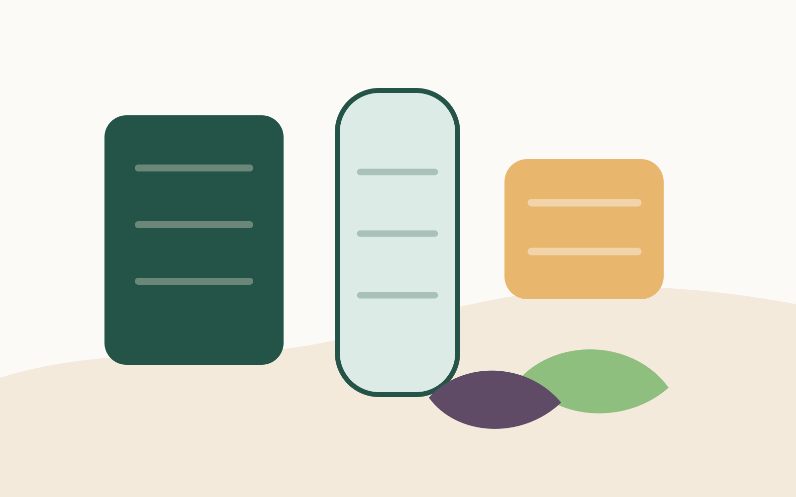

Everyday habits
Small routines, made easier.
A calm web-experience starter for teams building lifecycle concepts, membership journeys, internal tools, or campaign previews.

A calm web-experience starter for teams building lifecycle concepts, membership journeys, internal tools, or campaign previews.
